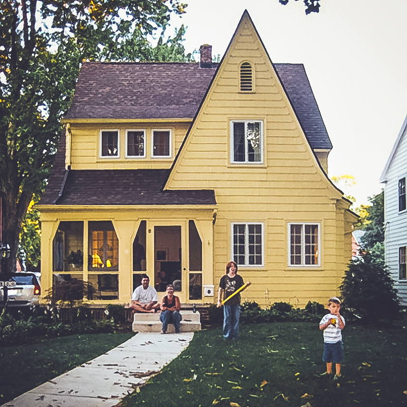
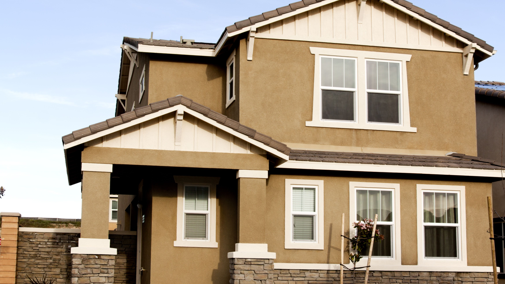

Ef íslenskan deyr
Hús Ogrganistans
Þetta hús gætti verið talið empæti sögunar og það skipti ekki máli hver þú værir þú gætir alltaf komið til að tala heimspekilegt spjall og orgelkensllu. Endur tekk smá það gáttu allir komið alvegsama hvort þú varst Krakki með áhuga á sellu fundum, þögull lögruglu maður, guð sem heldur að hann getti komist up með hvað sem er eða vinnu stúlka að norðan sem vill læra orgel. Hún Ugla fór þangað til að læra á píano til að geta spilað að norðan í nýju kirkjuna.  Húsið er staðset í reykjavík á tíma sem það voru margir sem bjögu í bragga á þessum tíma. ( Man ekki hvernig það var lýst í bókina og er búin að skila bókina, þá þetta er frá mína í-mund) þá ég lýður ekki eins og það var ekki braggi, en þetta var ekki of fínt hús. Þá þetta var líttill tvegja hæða hús með kjallara og evri hæð, húsið er umkringt littlu túni og littlum runnum. Ytri vegirnir eru þagtir gulum málmplötum og það stingur smá up úr hlaðvegg kjallarans, þakk rennan er hvít en þakkið er svart. Þegar þú labar inn í húsið þá eru lítil skref up að hurðinna. Þegar þú kemur inn er fatar standið í hornið við hliðiná tröbunar vegginir að innan eru þegnir í bóka hyllur fullar af heimspeki bækur, orgelið er upp að vegnum á mótti ingangnum, það er grá-grænn flaugils sófi up á veggin viðhliðiná orgelið kaffiborð á mótti og arinn út í hornið. Niðri í kjallara er eldhús, glugar yfir gasshelluna og lítið kamar undir tröpunar, síðan vegur á milli eldhúsinu og svefn herberginu. En eftir að hafa fengið lánaða bókina hef ég fundið utur að þetta var bara tré bragi. Þetta segir mikið um hvað stemningin fær mann til að spá.
Hús Þingmansins
Þingmaðurinn er maðurin sem er að udirbúa sölu landsins og það er vannalega bara vinnu fólk og fjölskyldan, fyrir utan veislunar haldnar heima hjá börnonum. Þetta er tvegja hæða múrsteina hús.  Sem hún Ugla býr í með, trúaða vinnu stúlku, þrír krakkar búa árlands, konan hans og búi árland, þingmaðurinn. Stemninginn er frekkar döppur á heilmilinu og hann búi árland er sjaldan heima. Það endar með að hún Ugla passar up á börninn, þótt að kóna hans búa hattaði hana fyrir að segja að hún var á sellu fund ( og líklega að börnonum var meiri vænt um Uglu). Síðan búi árlands er þingmaðurinn, þá er húsið velstatt. En annað en húsið hjá orgel kennaran; er þetta hús ekki eins hlít og smá niður drepandi.